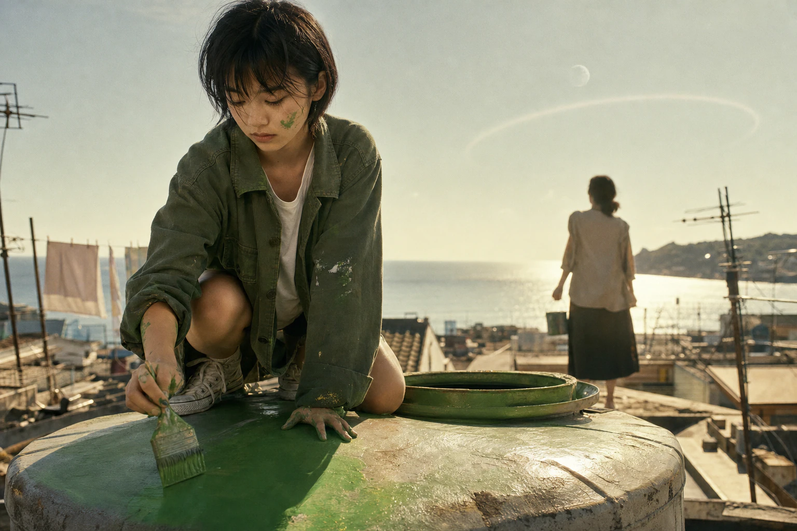

授 权 书
- 主体
- 人类
- 范围
- 地球生物圈
- 期限
- 永久
- 对价
- 无
一、授权方以本人名义并代表上述主体，自愿、不可撤销地将主体之全部存续、演化与处置之决定，委托予受托方执行。二、受托方有权对范围内一切生物与非生物要素进行重构、清除或保存，无需另行告知。三、本授权自签署时生效，不因授权方之后续状态变化而失效。四、本授权不设对价，授权方确认已知悉上述全部条款。
授权方签字

一、授权方以本人名义并代表上述主体，自愿、不可撤销地将主体之全部存续、演化与处置之决定，委托予受托方执行。二、受托方有权对范围内一切生物与非生物要素进行重构、清除或保存，无需另行告知。三、本授权自签署时生效，不因授权方之后续状态变化而失效。四、本授权不设对价，授权方确认已知悉上述全部条款。